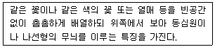
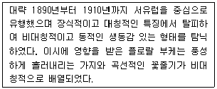
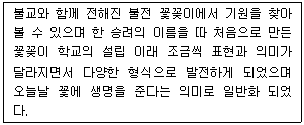
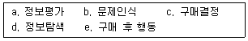

화훼장식기사 (2013-08-18 기출문제)
1과목: 화훼재료 및 형태학
1. 생육과정 중에 생장이나 절간 신장이 일시적으로 정지되는 현상은?
- 로제트
- 춘화작용
- 악할
- 충전
(정답률: 알수없음)

2. 테라리움의 관리방법으로 틀린 것은?
- 유리용기 내에 물방울이 맺힐 때 관수한다.
- 식물 배식 직후에는 음지에서 관리한다.
- 재배온도는 20℃내외로 관리한다.
- 액비를 낮은 농도로 희석해서 시비한다.
(정답률: 알수없음)
3. 라인 플라워 형태의 꽃이 아닌 것은?
- 금어초
- 극락조화
- 델피니움
- 리아트리스
(정답률: 알수없음)
4. 플라스틱 화분의 특성에 대한 설명으로 틀린 것은?
- 성형가공이 용이하여 대량생산이 가능하다.
- 용기가 가벼워서 취급이 용이하다.
- 이동성이 좋고 내구성이 좋아 영구적이다.
- 용기의 통기성이 나빠서 배양토의 배합시 통기 및 배수가 용이한 매질을 혼합하는 것이 유리하다.
(정답률: 알수없음)
5. 화훼장식에서 인조식물의 장점으로 거리가 먼 것은?
- 제작과정이 쉽고 지속적이다.
- 관리가 편하다.
- 식물과 같은 생동감을 잘 나타낼 수 있다.
- 식물이 나타낼 수 없는 다양한 색을 표현할 수 있다.
(정답률: 알수없음)
6. 원예식물 식재를 위한 좋은 토양의 조건으로 거리가 먼 것은?
- 유기물 함량이 적어야 한다.
- 통기성이 좋아야 한다.
- 배수가 잘 되어야 한다.
- pH는 중성에 가까운 약산성이 좋다.
(정답률: 알수없음)
7. 공중걸이형으로 식물을 장식할 때 폭포와 같은 느낌을 표현할 수 있는 식물 소재는?
- Sansevieria trifasciata Prain
- Euphorbia milii var. splendens Bojer
- Ceropegia woodii Schlecher
- Aphelandra squarrosa Nees
(정답률: 알수없음)
8. 난과 식물에 대한 설명으로 옳은 것은?
- 대표적인 착생란에는 심비디움속 식물이 있다.
- 서양란은 원산지가 영국 등 유럽이다.
- 난과 식물의 꽃은 꽃받침이 꽃잎처럼 화판화(petaloid) 되어 있다.
- 대표적인 난과 식물인 나비란은 나비처럼 생긴 모양에서 이름이 유래되었다.
(정답률: 알수없음)
9. 균근(mycorrhiza)에 대한 설명으로 틀린 것은?
- 외생균근과 내생균근이 있다.
- 곰팡이류로서 식물과 공생하는 균이다.
- 장미과 식물의 뿌리에 혹을 발생시키는 균이다.
- 심비디움 등의 난종자는 균근의 도움을 받아 발아되기도 한다.
(정답률: 알수없음)
10. 단일식물에 대한 설명으로 틀린 것은?
- 개화기간이 짧은 식물이다.
- 한계일장보다 짧은 일장에서 개화가 양호한 식물이다.
- 단일감응은 생장점 밑의 성엽에서 이루어진다.
- 국화, 코스모스, 포인세티아 등이 이에 속한다.
(정답률: 알수없음)
11. 식물의 잎에서 잎살(엽육)을 제거하고 엽맥 만을 원형대로 나출시켜서 장식 재료로 이 용하고자 할때 입살의 제거 방법으로 가장 적합한 것은?
- 알콜에 20~30분간 침적한다.
- 가성소다 30%용액에 넣어 90~100℃, 30~40분 처리 후 40℃ 온수에 담근다.
- 90~100℃의 뜨거운 물에 20~30분 담근다.
- 락스 10% 용액에 10~15분간 담근다.
(정답률: 알수없음)
12. 한가지로부터 여러 개의 가지와 꽃을 발생시킬 목적으로 가지 끝의 생장점을 제거해 주는 것은?
- 적과
- 적화
- 적뢰
- 적심
(정답률: 알수없음)
13. 1주지가 수평선보다 훨씬 아래로 늘어지는 하수형의 소재로 가장 이용하기 어려운 것은?
- 조팝나무
- 청미래덩굴
- 무궁화
- 노박덩굴
(정답률: 알수없음)
14. 단풍나무의 열매는 어디에 속하는가?
- 핵과
- 시과
- 이과
- 장과
(정답률: 알수없음)
15. 관엽식물에 대한 설명으로 옳은 것은?
- 꽃이 화려하고 아름다워 주로 꽃을 감상하는 식물이다.
- 대부분 온대 혹은 한 대지방이 원산인 식물로 추위에 강하다.
- 온실 관엽식물과 노지 관엽식물로 구분할 수 있다.
- 햇빛이 잘 드는 양지에서 잘 자라는 식물이다.
(정답률: 알수없음)
16. 화목류 주에서 상록성이 아닌 것은?
- 자귀나무
- 가시나무
- 후박나무
- 치자나무
(정답률: 알수없음)
17. 갈란드에 대한 설명으로 옳은 것은?
- 꽃을 가득 모아서 끝으로 묶어 손에 들거나 공간을 장식하는 것이다.
- 십자가, 별, 태양 등과 같은 어떤 상징물을 꽃으로 꽂거나 부착시켜 만든 것이다.
- 용기에 꽃을 주 소재로 하고 여러 가지 소재를 꽂아 꽃의 아름다움을 감상하는 것이다.
- 꽃을 여러 가지 소재와 함께 엮어서 길게 만든 것으로 기둥에 감아 주거나 식탁주위에 길게 드리워 장식하는 것이다.
(정답률: 알수없음)
18. 구근의 형태에 따른 화훼식물의 분류에서 뿌리줄기(근경)류가 아닌 것은?
- 아이리스
- 꽃생강
- 칸나
- 다알리아
(정답률: 알수없음)
19. 잎차례(엽서)에 대한 용어가 아닌 것은?
- 호생
- 대생
- 근생
- 교생
(정답률: 알수없음)
20. 화훼장식시 백열등을 인공조명으로 사용하였을 때 일반적으로 나타나는 식물의 특성으로 거리가 먼 것은?
- 잎색이 옅어진다.
- 잎이 얇아지고 길어진다.
- 줄기가 지나치게 자라고 길어진다.
- 개화, 결실, 노화가 늦어진다.
(정답률: 알수없음)
2과목: 화훼품질유지 및 관리론
21. 화훼식물에서 춘화처리(vemalization)의 목적은?
- 생장촉진
- 발아촉진
- 개화촉진
- 휴면타파
(정답률: 알수없음)
22. 종자단계에서 일정기간의 저온을 경과하여야 꽃눈이 분화되는 화훼는?
- 개나리, 행운목
- 스위트피, 스토크
- 글라디올러스, 튤립
- 무궁화, 다알리아
(정답률: 알수없음)
23. 당이 첨가된 절화보존제에 반드시 함께 넣어야 할 성분은?
- 살균제
- 식물생장조절제
- 에틸렌 생성억제제
- 에틸렌 작용억제제
(정답률: 알수없음)
24. 절화의 도관폐쇄의 원인이 아닌 것은?
- 도관내의 기포형성
- 미생물 번식
- 도관내의 물기둥 형성
- 절단면의 유액 분비
(정답률: 알수없음)
25. 광질에 의한 식물의 생육반응인 광형태형성(photomorphogenesis)에 대한 설명으로 틀린 것은?
- 크립토크롬(cryptochrome)은 청색광과 UV-A를 흡수하는 광수용체이다.
- 피토크롬(phytochrome)은 적생광과 청색광을 흡수하는 광 수용체이다.
- 피토크롬(phytochrome)은 광가역적 반응을 한다.
- 광수용체는 UV-A에 반응하는 수용체가 있다.
(정답률: 알수없음)
26. 절화의 선도유지 포장 자재에 대한 설명으로 옳은 것은?
- 선도유지 필름은 다공성 천연광물을 필름에 함입시켜 에틸렌을 흡착시킨다.
- 기능성 필름은 공기와 수분의 투과성을 조절하여 포장내 습도를 저습도로 유지시킨다.
- 상자의 보냉, 단열효과를 감소시키거나 상자 내 공기조성을 선도 유지에 알맞게 유지시 키는 첨가제를 넣는다.
- LCA조성제는 스티로폼 상자에 축냉을 위해 사용되는 물질이다.
(정답률: 알수없음)
27. 재배기간 동안 절화의 수명에 관여하는 요인인 광에 대한 설명으로 옳은 것은?
- 저광도 하에서 자란 카네이션과 국화의 절화 수명은 고광도에서 자란 것보다 길다.
- 저광도는 화경의 과도한 신장을 초래하므로 줄기의 경화가 지연된다.
- 줄기의 경화가 불충분하면 장미에서는 줄기굽음(stembending) 현상이 일어난다.
- 고광도 하에서 자란 장미의 봉오리 절화를 당 용액으로 처리하면 꽃잎의 색이 정상으로 돌아오지만 무처리 꽃은 꽃잎의 색이 엷어진다.
(정답률: 알수없음)
28. 종자의 휴면타파 방법으로 틀린 것은?
- 파상처리
- 황상처리
- 저온처리
- ABA처리
(정답률: 알수없음)
29. 분화류의 분갈이에 대한 설명으로 적합하지 않은 것은?
- 화분에 뿌리가 가득차서 생장이 더디면 분갈이를 하여야 한다.
- 분갈이하기 하루 전에 충분히 관수한다.
- 화분에서 뽑아낸 식물은 뿌리를 건드리지 말고 새 화분에 그대로 잘 심어 확착이 잘 되도록 한다.
- 분갈이가 끝난 식물은 관수를 충분히 하여 직사광선이 쪼이지 않는 곳에 수일간 둔다.
(정답률: 알수없음)
30. 냉해에 대한 절화의 민감성을 고민감성과 저민감성으로 분류할 때 다음 중 고민감성 식물인 것은?
- 과꽃
- 수선
- 안개초
- 안수리움
(정답률: 알수없음)
31. 절화의 수확방법에 대한 설명으로 틀린 것은?
- 절단은 부드럽게 한다.
- 절단면이 뭉그러지지 않도록 한다.
- 줄기는 가급적 짧게 자른다.
- 줄기의 경화가 이루어지지 않은 부위에서 자른다.
(정답률: 알수없음)
32. 분화류의 환경조절에 대한 설명으로 틀린 것은?
- 분토가 지나치게 마르면 염도가 증가하여 식물체에 해를 준다.
- 온도적응성에 따라 차이가 있으나 주요 관엽식물에서 16℃ 이하의 온도에 생장이 감소하고, 8℃이하에서는 저온에 약한 식물은 장해를 받는다.
- 분식물은 대부분 80~90%의 습도에서 유지될 수 있다.
- 분식물의 관수에 사용하는 물의 수온이 너무 낮으면 앞에 백색 반점과 같은 상해를 유발할 수 있다.
(정답률: 알수없음)
33. 구근류 중 저온에서 휴면이 타파 되는 것은?
- 프리지아
- 나팔나리
- 글라디올러스
- 아이리스
(정답률: 알수없음)
34. 세워서 수송해야 하는 대표적 절화는?
- 금어초
- 리아트리스
- 안수리움
- 팔레놉시스
(정답률: 알수없음)
35. 절화의 저온 수송의 장점이 아닌 것은?
- 꽃의 노화지연
- 급격한 수분손실 방지
- 호흡과 방열의 증가
- 에틸렌 생성 감소
(정답률: 알수없음)
36. 장미화 함께 같은 용기에 꽂아 놓으면 줄기에서 나오는 점액성 물질로 인하여 장미의 수분 흡수량을 감소시키고 꽃 목굽음을 발생시키는 절화는?
- 튤립
- 글라디올러스
- 안개초
- 수선화
(정답률: 알수없음)
37. 분화류의 관수방법에 대한 설명으로 옳은 것은?
- 겨울에는 물이 차므로 이른 아침에 관수한다.
- 물이 화분 밑 배수구로 충분히 흘러내리도록 관수한다.
- 컵으로 관수하여 물이 화분 밑으로 흘러내리지 않도록 관수한다.
- 물을 매일 매일 조금씩 관수한다.
(정답률: 알수없음)
38. 절화 수송을 위한 상자 포장 방법에 대한 설명으로 틀린 것은?
- 일반적으로 상자는 길고 납작한 모양을 한다.
- 상자 내 습도는 최대한 낮추어 준다.
- 상자 내에서 움직이지 않게 최소한으로 꽉 채운다.
- 절화를 포갤 경우 한 층마다 신문지를 사용하다.
(정답률: 알수없음)
39. 식물체내 물의 역할에 대한 설명으로 틀린 것은?
- 광합성과 기타 화학 반응의 원료가 된다.
- 영양 원소들과 광합성 산물 등은 물에 용해된 상태로 체내 전류가 가능해진다.
- 물이 흡수되어서 삼투압이 커지기 때문에 식물체 본래의 체형이 유지될 수 있다.
- 각종 효소의 활성을 증대시켜 촉매작용을 촉진시킨다.
(정답률: 알수없음)
40. 절화의 수확 시기 및 시간에 대한 설명으로 틀린 것은?
- 수확량이 많이 아침 수확이 어려울 때는 수확 수 바로 물에 닼그고 실온에 보관한다.
- 절화의 수확시기는 꽃의 종류, 재배시기, 수송 및 유통기간 등을 고려해야 한다.
- 생명활동이 왕성한 고온 및 고광도 하의 수확은 피하는 것이 좋다.
- 수확시간은 채화 수 수분이 급격히 손실되는 꽃의 경우에 아침에 수확하는 것이 좋다.
(정답률: 알수없음)
3과목: 화훼장식학
41. 화훼장식의 기술적 측면이 나타나지 않은 것은?
- 입원십육지
- 산림경제
- 의방유치
- 오주연문장전산고
(정답률: 알수없음)
42. 상업용 공간장식의 계획과 실행에서 유의 할 사랑으로 거리가 먼 것은?
- 디자인을 우선적으로 고려한다.
- 장식공간의 기능 및 장소와 환경을 고려한다.
- 강한 장식효과를 위해 때론 대형 꽃꽂이도 필요하다.
- 위생문제에 신경을 쓴다.
(정답률: 알수없음)
43. 플로랄폼과 이용에 대한 설명으로 틀린 것은?
- 일반적으로 절화 장식에 사용하는 재료이며 기능적인 역할 뿐만 아니라 장식적인 역할도 가지고 있다.
- 재반복해서 사용할 수 없다.
- 폼에 물을 흡수시키는 방법은 침수법을 사용해야 한다.
- 폼을 용기에 고정할 때 물로 포화시킨 촘에 접착제를 묻혀 용기 바닥에 대고 완전히 붙도록 한다.
(정답률: 알수없음)
44. 다음 설명하는 디자인 양식에 대한 설명으로 옳은 것은?

- 베이싱 기법중의 하나인 파베디자인을 말한다.
- 프랑스의 Empire양식, 영국의 regency양식과 비슷한 디자인으로 비더마이어 디자인을 말한다.
- 천송이의 꽃이라는 의미를 가진 디자인을 말한다.
- 17세기 네덜란드 화가들의 그림에서 유래한 디자인이다.
(정답률: 알수없음)
45. 다음 설명하는 디자인 양시은?

- Art Nouveau
- Art Deco
- Contemporary
- Victorian
(정답률: 알수없음)
46. 원형 부케의 종류에 해당하지 않는 것은?
- 노즈게이 부케
- 머프 부케
- 콜로니얼부케
- 포지 클러스터 부케
(정답률: 알수없음)
47. 상업적인 디스클레이용 화훼장식에 대한 설명으로 틀린 것은?
- 주된 목적은 고객으로 하여금 상품을 구입하도록 동기를 만들어 주는 것이다.
- 단순한 공간 장식 보다는 상업공간의 이미지 전달과 상품홍보를 목적으로 한다.
- 상업공간의 이미지 전달과 상품 홍보를 위하여 매우 독창적이며 시선을 집중시킬 수 있는 연출이 중요하다.
- 예술가로서 또는 화훼장식 전문가로서의 홍보와 아이디어를 선보이게 되므로 실용적인 장식보다는 독창적이며 예술성이 강한 디자인이 연출된다.
(정답률: 알수없음)
48. 다음은 무엇에 대한 설명인가?

- 화도
- 수생화도
- 화분도
- 이께바나
(정답률: 알수없음)
49. 형상디자인이란 여러 가지 공장물 또는 동물의 형상을 모방하거나 그 형상대로 꽃을 꽂거나 식물을 담거나 유인하여 모양을 만드는 것이다. 이에 대한 설명으로 틀린 것은?
- 어떠한 형상으로도 디지안이 가능하나 비교적 단순한 모양이 제작에 편리하다.
- 형상을 제작하는 방법에는 플로랄 폼을 사용하는 방법과 철망을 이용하여 형태를 만들어 제작하는 방법 등이 있다.
- 어떤 행사나 공간에 사용되어지는 형상 디자인은 대표적인 상징물로 사용될 수 있다.
- 모든 형상물의 베이스 작업은 삼각형 또는 원형에서 시작된다.
(정답률: 알수없음)
50. 한국의 전통적인 꽃꽂이가 발전해온 방향으로 거리가 먼 것은?
- 불전, 신전, 기타 의식에서의 헌공화
- 환경조절 효과
- 생활공간의 장식
- 꽃을 통한 조형예술의 창조서의 화예
(정답률: 알수없음)
51. 용도별 화훼 장식에 대한 설명으로 옳은 것은?
- 꽃바구니는 근대 이후 종교적 목적으로 사용되었다.
- 졸업과 입학시 축하의 웨딩부케가 이용된다.
- 창가의 화훼장식의 경우 고온다습한 관엽식물이 적당하다.
- 호텔의 화훼장식의 경우 꽃은 계절 보다 다소 앞서 장식하는 것이 효과적이다.
(정답률: 알수없음)
52. 화훼장식을 할 때 투명한 재질의 그릇을 사용하기에 가장 적합한 계절은?
- 봄
- 여름
- 가을
- 겨울
(정답률: 알수없음)
53. 콜라쥬에 대한 설명으로 틀린 것은?
- 천, 금속, 돌, 나무 조각 등의 재료를 화면에 혼합, 붙여서 구성하는 방법이다.
- 20세기에 등장한 독특한 시각 예술의 한 형태이다.
- 절화를 이용하여 고리모양으로 만들어낸 장식물이다.
- 자연적이거나 추상적인 어떠한 구성도 가능하다.
(정답률: 알수없음)
54. 화훼장식품 감상시 기대할 수 있는 효과는?
- 신체운동 기능향상
- 긴장과 스트레스 경감
- 자립능력 배양
- 정교한 손운동 촉진을 통한 손의 기능향상
(정답률: 알수없음)
55. 꽃을 건조시키는 방법으로 틀린 것은?
- 초단파 기구장치를 사용한다.
- 파라핀 흡수 후 건조시키는 방법이 있다.
- 물에 세워 건조시키는 방법이 있다.
- 실리카겔처럼 붕사를 건조에 사용할 수 있다.
(정답률: 알수없음)
56. 꽃다발에 대한 설명으로 틀린 것은?
- 최근의 꽃다발은 구입 후 풀지 않고 그대로 용기에 담아 장식 할 수 있는 형태로 제작 되고 있다.
- 구조물(틀)을 활용하는 꽃다발은 구조물과 꽃다발의 디자인이 조화롭고 통일감이 있어야 한다.
- 장식적 꽃다발은 소재의 크기와 운동성이 서로 다른 것이 이용하여 풍성하게 제작한다.
- 선형의 꽃다발은 대칭의 형태로만 제작하며 강한 긴장감을 준다.
(정답률: 알수없음)
57. 관상을 대상으로 하는 초본 식물과 목본식물을 총괄하는 의미로 가장 적합한 것은?
- 화훼
- 절화
- 분식물
- 정원식물
(정답률: 알수없음)
58. 분식물을 위한 작업 시설에 대한 설명으로 가장 거리가 먼 것은?
- 구입된 식물을 보관할 수 있는 적절한 환경을 가진 공간이 필요하다.
- 옮겨 심은 식물의 생육이 안정될때까지 보관할 수 있는 적절한 환경을 가진 온실이나 보관실이 필요하다.
- 식물을 오래 보관하게 될 경우 광도와 온도, 습도를 유지해 줄 수 있는 시스템이 중요하다.
- 작업실의 환경에서 광도, 온도, 습도 중 습도환경이 가장 중요하다.
(정답률: 알수없음)
59. 절화장식의 구성 그룹으로 틀린 것은?
- 직선구성: 수직형, L자형
- Mass구성: 부채형, 역T자형
- 곡선구성: 초생달형, S자형
- 사방입체구성: 반구형, 원추형
(정답률: 알수없음)
60. 압화의 재료로 사용하기 어려운 것은?
- 구조가 간단하고 크기가 작은 꽃
- 주름이 많은 꽃
- 두께가 적당하고 꽃잎의 수분함량이 적은 꽃
- 황색, 오렌지색, 남색, 자색, 홍색 등의 꽃
(정답률: 알수없음)
4과목: 화훼장식 디자인 및 제작론
61. 상업공간의 화훼장식에서 고려할 사항으로 중용도가 가장 낮은 것은?
- 계절
- 기업이미지
- 상품이미지
- 포트폴리오
(정답률: 알수없음)
62. 절화장식 디자인 과정에서 주제를 결정할 때 가장 먼저 해야 할 것은?
- 소재의 구입과 분비
- 양식과 예산 및 공간의 특성조사 분석
- 장식물이나 장식공간의 용도 및 목적파악
- 구체적 구상과 스케치
(정답률: 알수없음)
63. 조용하며 수동적이고 평화적인 느낌을 주는 디자인 방향은?
- 수직방향
- 경사방향
- 불규칙 방향
- 수평방향
(정답률: 알수없음)
64. 같은 종류의 납작한 소재를 화기의 아래에서부터 한겹 한겹 빽빽하게 겹쳐 쌓는 기법은?
- 레이어링
- 스테킹
- 그루핑
- 테라싱
(정답률: 알수없음)
65. 절화장식물의 제작 후 유지관리에 대한 설명으로 틀린 것은?
- 제작된 장식물은 튼튼하고 안정감이 있어야 하므로 끝처리를 잘해야 한다.
- 절화장식물의 신선도를 유지하기 위해 바람이 많이 부는 장소에 보관하는 것이 좋다.
- 시든 식물은 바로 제거하여 에틸렌 발생을 낮추고 양분 손실도 막는다.
- 수분관리를 위해 1~2일 마다 줄기 끝을 다시 잘라주고 물도 갈아주는 것이 좋다.
(정답률: 알수없음)
66. 균형에 대한 설명으로 틀린 것은?
- 둘 이상의 힘이 서로 평균이 되는 것이다.
- 시각적 균형은 대칭 균형과 비대칭 균형으로 나눈다.
- 균형의 표현은 안정의 개념으로 설명되는 디자인 원리이다.
- 같은 요소들에 의한 시각적 움직임이 연속적으로 되풀이 되는 것이다.
(정답률: 알수없음)
67. 장례용으로 사용되는 화훼 장식에 대한 설명으로 틀린 것은?
- 십자가 장식은 종교적인 의미가 강하므로 기독교, 천주교식 장례생사에서 볼 수 있다.
- 리스 장식은 원형의 형태로 시작과 끝이 없다는 의미로 영원성, 불멸, 영원한 인생 등의 의미를 가지고 있어서 장례식의 화훼장식에 널리 이용되어 왔다.
- 우리나라에서는 사후의 아름다운 세계로 망자를 인도한다는 의미에서 전통적으로 화려한 관장식을 이용해 왔다.
- 우리나라 장례식의 경우 조로 국화, 거베라 등 흰색의 꽃으로 꽃다발을 제작하는 반면 서양의 경우 다양한 색상의 화려한 형태의 꽃들도 많이 사용한다.
(정답률: 알수없음)
68. 공간이 거의 없도록 꽃이나 식물을 꽂은 형태를 무엇이라고 하는가?
- 닫히 형태
- 응용 형태
- 열린 형태
- 전통적 형태
(정답률: 알수없음)
69. 분화 장식물의 제작 후 관리방법에 대한 설명으로 틀린 것은?
- 뿌리가 잘 확착하기 전에는 분화 장식물의 원활한 증산 작용을 위해 지상부의 가지치기를 해서는 안된다.
- 주식물과 첨경물을 배치한 수 바닥면에 지피식물을 식재하거나 이끼, 자갈, 바크 등으로 표면을 덮어 지온과 습도를 조절하고 미적 효과도 높인다.
- 식물 심기 작업이 완성된 후 곧바로 장식할 장소로 옮기지 말고 음지나 반음지로 옮겨 충분히 관수하고 용기와 식물에 묻어있는 먼지를 깨끗이 닦아준다.
- 반음지에서 일정기간 그대로 두어 뿌리 활착을 시키며 관수와 배수 상황을 보고 적절한 관리법을 파악한다.
(정답률: 알수없음)
70. 화훼장식 디자인 과정으로 주제 결정을 위한 공간 특성조사 분석시 조사와 분석의 대상이 아닌 것은?
- 공간의 특성
- 이용자의 특성
- 시각 구조상의 특성
- 조사 분석자의 특성
(정답률: 알수없음)
71. 핸드타이트 부케 제작 시 주의 사항으로 틀린 것은?
- 줄기는 반드시 직선 또는 나선형으로 돌려가며 조립해야 한다.
- 묶음점은 되도록 두껍게 묶는다.
- 묶음점은 단단하게 묶는다.
- 줄기 끝은 예리한 칼로 비스듬히 자른다.
(정답률: 알수없음)
72. 색의 대비 중 어느 색을 본 후 시차를 두고 다른 색들을 볼 때 일어나는 현상으로 시차 간격이 다름에 따라 발생하는 대비는?
- 동시대비
- 계시대비
- 채도대비
- 보색대비
(정답률: 알수없음)
73. 리스에 대한 설명이 아닌 것은?
- 절화와 절엽 등을 길게 엮은 장식물이다.
- 고대 그리스에는 충성과 헌신의 상징으로 이용되었다.
- 나무 덩굴이나 짚, 로프, 철사 등을 사용하기도 한다.
- 반평면적인 장식물도 있다.
(정답률: 알수없음)
74. 연회장 장식에 대한 설명으로 틀린 것은?
- 연회장의 화훼장식은 테이블 주위의 공간과 테이블 장식으로 이루어진다.
- 수평적인 꽃꽂이로만 할 것이 아니라 시야를 방해하지 않는 높이의 수직적인 꽃꽂이도 좋다.
- 결혼식 연회장 장식에서 신혼부부와 양가 가족석 테이블에는 중앙에 꽃꽂이를 배치한다.
- 테이블 주의의 공간을 시야를 가릴 수 있으므로 대형 분식물을 이용하지 않는다.
(정답률: 알수없음)
75. 디자인의 원리 중 작품의 특정 부분의 흥미를 끌기 위해 그 부분을 강하게 표현하는 것은?
- 균형
- 통일
- 강조
- 리듬
(정답률: 알수없음)
76. 분식물에 사용하기 위한 토양에 대한 설명으로 틀린 것은?
- 정원 토양은 배수성과 통기성이 좋으나 다른 토양과의 유기적인 결합이 약하므로 분식 물에 사용할 경우 정원 토양만을 사용하는 것이 좋다.
- 토양은 염분이 적어야 하지만, 비료분을 보유하고 공급할 수 있는 충분한 양이온 교환용량을 가져야 한다.
- 병해충이 없어야하며, 생물학적, 화학적으로 안정되어 빨리 썩지 않아야 한다.
- 스패거넘 피트모스, 바크, 톱밥과 같은 유기물과 모래, 펄라이트, 질석 등을 사용하면 통기성, 배수성, 보수성을 개선할 수 있다.
(정답률: 알수없음)
77. 실내 식물배식의 평면적 형태는 크게 단식, 열식, 군식으로 구분하는 데 이에 대한 설명으로 틀린 것은?
- 단식은 수형이 아름답고 수고가 큰 수목 하나만 심는 것을 말한다.
- 단식은 통행유도의 역할로 사용되는 경우도 있다.
- 군식은 녹색의 부피감을 조성하기 위한 배식기법으로 관목과 지피식물의 배치에 이용된다.
- 열식은 선형으로 배치되므로 공간의 분할에 효과적이다.
(정답률: 알수없음)
78. 줄기의 속이 비었거나 연한 꽃의 자연줄기를 그대로 살리고 싶은 경우 철사를 줄기 밑에서 위로 찔러 넣은 방법은?
- 피어스법
- 인서션법
- 후크법
- 소잉법
(정답률: 알수없음)
79. 절화 장식물의 표현기법 중 밑받침 기법으로 사용하기 어려운 것은?
- 테라싱 기법
- 프레이밍 기법
- 레이어링 기법
- 클러스터링 기법
(정답률: 알수없음)
80. 디자인 요소 중 질감에 대한 설명으로 틀린 것은?
- 촉각적 질감과 시각적 질감으로 구분된다.
- 어떤 물체가 갖고 있는 표면적 특징을 말한다.
- 매끈한 유리, 거울, 밝은 색의 금속류는 차갑게 느껴진다.
- 거친 질감의 식물은 시각적으로 멀어지는 것 같은 느낌이 들고 질감의 식물은 앞으로 나아가는 듯이 보인다.
(정답률: 알수없음)
5과목: 화훼유통 및 경영론
81. 플라워샾의 경영주가 특허청에 상표/서비스표 등록 후 보호를 받을 수 있는 것이 아닌 것은?
- 상표
- 상호
- 품질표시
- 서비스표시
(정답률: 알수없음)
82. 절화의 유통에서 표준 규격화 및 등급화의 이점이 아닌 것은?
- 수송 하역의 편리
- 유통정보의 수집 및 제공용이
- 포장 내 내용물의 보호
- 유통 비용의 증가
(정답률: 알수없음)
83. 생산자가 영세하고 지리적으로 널리 흩어져 있는 경우 나타나는 유통 형태는?
- 생산자→소비자
- 생산자→소매상→소비자
- 생산자→도매상→소매상→소비자
- 생산자→도매상→중간도매상→소비자
(정답률: 알수없음)
84. 화원의 유형 중 판매 방식에 따른 분류에 속하는 것은?
- 프렌차이즈 체인점
- 농장 직매장형
- 협력점
- 전문점
(정답률: 알수없음)
85. 화훼 상품의 진열 방법으로 적합하지 않은 것은?
- 주력상품을 잘 보이는 곳에 진열한다.
- 이동공간을 넓혀 상품이 잘 보이도록 한다.
- 너무 높거나 너무 낮은 곳에 상품을 진열하지 않는다.
- 상품 종류의 다양성을 강조하기 위하여 관련 상품을 되도록 분리하여 진열한다.
(정답률: 알수없음)
86. 농산물 표준 규격에 따라 장미의 등급 규격에서 상 등급에 해당하지 않는 것은?
- 꽃은 품종고유의 모양으로 색택이 선명하고 양호한 것
- 줄기는 세력이 강하고 휘어진 정도가 약하며 굵기가 비교적 일정한 것
- 꽃대길이는 2급 이상으로 다른 크기 구분이 섞이지 않은 것
- 경결점이 5% 이하인 것
(정답률: 알수없음)
87. 사용자는 근로자를 해고하려면 적어도 30일 전에 예고를 하여야 한다. 다음 중 예고 해고의 적용 예외가 아닌 경우는?
- 수습 사용 중의 근로자
- 월급 근로자로서 10개월이 된 자
- 2개월 이내의 기간을 정하여 사용된 자
- 일용 근로자로서 3개월을 계속해서 근무하지 아니한 자
(정답률: 알수없음)
88. 통신배달의 의의에 해당하지 않는 것은?
- 꽃주문과 이용의 편리성 제공
- 홍보에 의한 수요 창출
- 동일한 규격품의 판매가능
- 영업 대상의 확대
(정답률: 알수없음)
89. 화훼유통 시장에 있어서 법정 도매시장의 역할이 아닌 것은?
- 생산 농가의 안정적 판로
- 위탁을 위주로 하는 도매활동
- 지역 화훼시장의 거래 활성화
- 공정거래 유도
(정답률: 알수없음)
90. 분화류의 품질을 결정하는 사항으로 거리가 먼 것은?
- 모양
- 신선도
- 수명
- 품종
(정답률: 알수없음)
91. 화훼류의 수요는 도시 집중적이고 수요단위가 영세하기 때문에 여러 단계의 유통과정을 거치게 된다. 이러한 과정에서 일반적으로 포함되지 않는 것은?
- 가공기구
- 수집기구
- 중계기구
- 분산기구
(정답률: 알수없음)
92. 구매단계의 순서로 옳은 것은?

- a-b-c-d-e
- a-c-b-d-e
- b-a-c-d-e
- b-d-a-c-e
(정답률: 알수없음)
93. A화원의 1개월간 고객 수 100명, 객단가 35,000원, 상품의 마진율이 20%라고 할 때 월 매출액은?
- 700,000원
- 3,150,000원
- 3,500,000원
- 3,850,000원
(정답률: 알수없음)
94. 봉오리 단계에서의 수확에 대한 설명으로 틀린 것은?
- 조기수확시 전처리제를 처리하는 것이 좋다.
- 재배적 측면에서는 포장에서 재배횟수를 증가시킨다.
- 꽃봉오리 단계의 절화는 만개 상태에 비하여 에틸렌에 민감하다.
- 수송과 저장에 공간을 적게 차지한다.
(정답률: 알수없음)
95. 국내에서 분화류 생산이 가장 많은 지역은?
- 경기권
- 강원권
- 충청권
- 호남권
(정답률: 알수없음)
96. 상품구성 중 장미 전문점 또는 양란 전문점에 해당하는 것은?
- 좁고 얕은 상품 구성
- 좁고 깊은 상품 구성
- 넓고 깊은 상품 구성
- 넓고 얕은 상품 구성
(정답률: 알수없음)
97. 화훼 농산물의 유통기능을 소유권 이전 기능, 물적 유통기능, 유통 조성 기능으로 나눌 때 다음 중 물적 유통 기능에 해당되지 않는 것은?
- 가공
- 교환
- 수송
- 저장
(정답률: 알수없음)
98. A씨는 5인 이상 근무하는 사업장에서 점원으로 4년간 일하던 중 회사의 감원으로 인하여 직장을 잃게 되었다. 그가 고용보험에 가입한 사람이라면 어떤 실업급여 혜택을 받을 수 있는가? (단, A씨의 나이는 35세이고, 최저 임금액 이상을 급여 받았으며 고용보험 가입기간은 2년이다.)
- 기초일액의 30%를 90일 동안 구직 급여일액으로 받을 수 있다.
- 기초일액의 30%를 120일 동안 구직 급여일액으로 받을 수 있다.
- 기초일액의 50%를 150일 동안 구직 급여일액으로 받을 수 있다.
- 기초일액의 50%를 210일 동안 구직 급여일액으로 받을 수 있다.
(정답률: 알수없음)
99. 화훼 소재의 구입시 유의 할 사항으로 거리가 먼 것은?
- 가격이 싼 것 위주로 구입을 한다.
- 가능한 충분한 시간을 두고 주문한다.
- 구입할 종류와 양을 결정하고 목록을 작성한다.
- 통신 주문품은 주문내용과 일치여부를 확인한다.
(정답률: 알수없음)
100. 화훼 품종보호를 위한 UPOV 협약 요건이 아닌 것은?
- 구별성
- 신규성
- 정보성
- 균일성
(정답률: 알수없음)